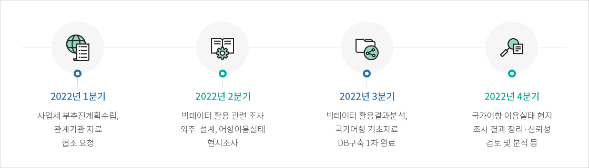
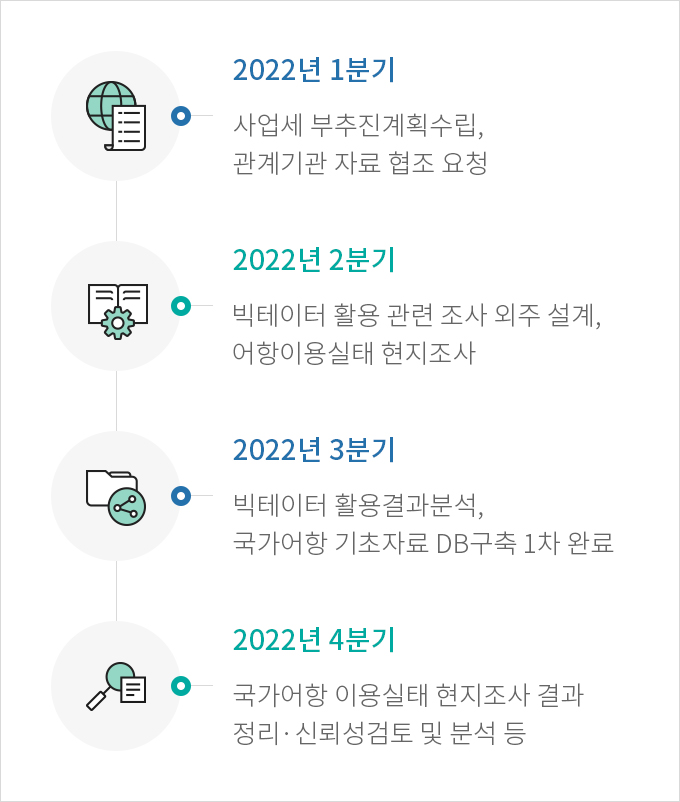
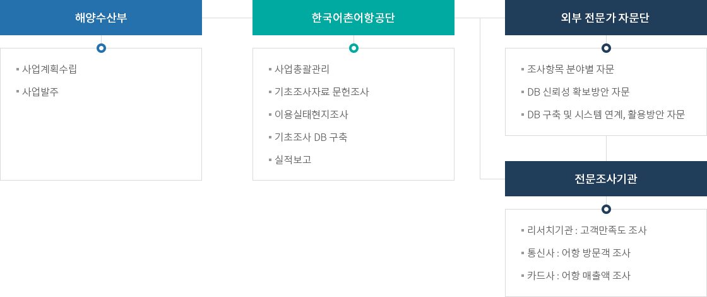
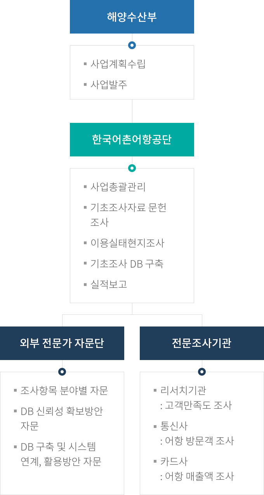

국가어항 기초조사
- 홈
- 사업소개
- 쾌적한 어항
- 국가어항 기초조사
추진계획


- 2022년 1분기 - 사업세 부추진계획수립, 관계기관 자료 협조 요청
- 2022년 2분기 - 빅테이터 활용 관련 조사 외주 설계, 어항이용실태 현지조사
- 2022년 3분기 - 빅테이터 활용결과분석, 국가어항 기초자료 DB구축 1차 완료
- 2022년 4분기 - 국가어항 이용실태 현지 조사 결과 정리·신뢰성 검토 및 분석 등
추진체계


해양수산부
- 사업계획수립
- 사업발주
한국어촌어항공단
- 사업총괄관리
- 기초조사자료 문헌조사
- 이용실태현지조사
- 기초조사 DB 구축
- 실적보고
외부 전문가 자문단
- 조사항목 분야별 자문
- DB 신뢰성 확보방안 자문
- DB 구축 및 시스템 연계, 활용방안 자문
전문조사기관
- 리서치기관 : 고객만족도 조사
- 통신사 : 어항 방문객 조사
- 카드사 : 어항 매출액 조사